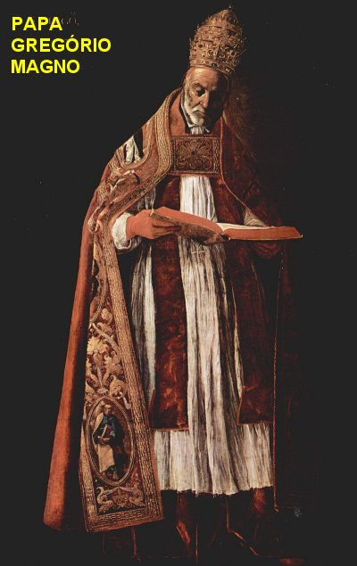
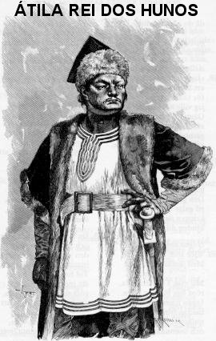
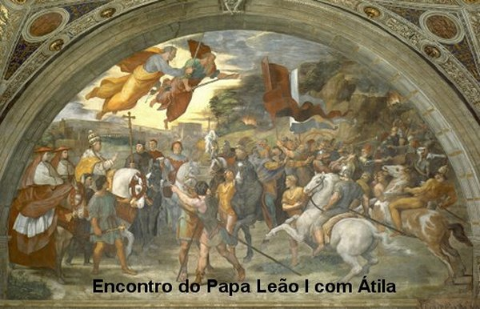
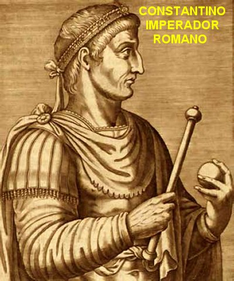
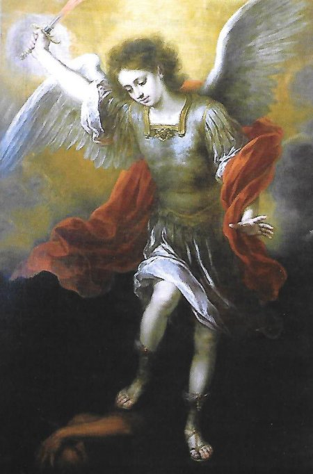
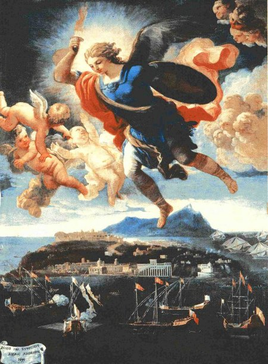
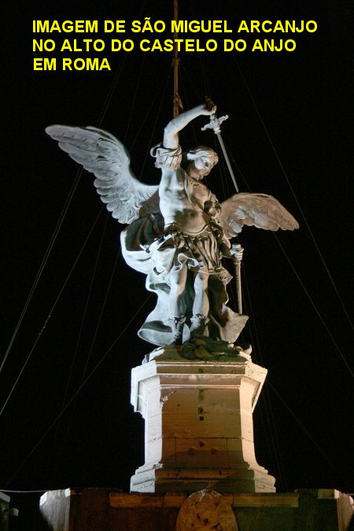

COMANDANTE CELESTE

OUTRAS APARIÇÕES
Em 590 o Papa São Gregório Magno ordenou que fizessem uma procissão penitencial desde a BASÍLICA DE SANTA MARIA MAIOR (Santa Maria Maggiore), em Roma, na Itália, para debelar uma praga terrível. O próprio Papa participou da procissão, carregando uma imagem da VIRGEM MARIA. Quando chegou à ponte sobre o Rio Tibre, ouviram um agradável e bonito cântico de Anjos e, de repente, no Castelo de Adriano, agora denominado Castelo Sant'Angelo, apareceu o Arcanjo São Miguel no ato de embainhar a espada, entoando o famoso hino "Regina Coeli" (RAINHA DO CÉU). Naquele momento a praga cessou.
No período 1412-1431 o Arcanjo apareceu várias vezes a Santa Joana d’Arc, na França, estimulando-lhe a pegar em armas e defender o seu país contra os poderosos invasores ingleses. Mas ela, coitada, uma simples jovem do interior, com apenas 13 anos de idade, sem qualquer instrução e nem sabia montar a cavalo, ficava admirada com as Aparições e o estimulo do Arcanjo, mas não tinha coragem e nem sabia como começar a cumprir a Vontade Divina, que o Arcanjo São Miguel lhe comunicava. Contudo, na sequência dos meses e na sucessão das Aparições, o Arcanjo pacientemente foi lhe ensinando como devia proceder, orientando-lhe em todos os procedimentos. Joana se apresentou ao Capitão Robert Baudricourt e pediu para ser conduzida ao Delfim (herdeiro do trono da França). Depois de meses de expectativa foi conduzia ao Delfim, conseguiu as armas necessárias e organizou o exército para libertar Órleans dos ingleses, e onde também, o Delfim foi coroado Rei da França, conforme a Vontade Divina. Depois de muitas desconfianças, acabaram acreditando na jovem e acionaram todas as providências. Bem instruída por São Miguel Arcanjo, Joana caminhou a frente do exército, levantando a moral dos militares e sitiando todas as cidades, combatendo o inimigo inglês com força e dignidade, libertando admiravelmente todos os locais por onde passava, até chegar a Órleans. Foi um combate feroz e heróico, sob a orientação do Arcanjo e o tremulante estandarte nas mãos dela, com a idade 18 anos e sem qualquer cultura, levou os exércitos desmoralizados e sem êxito da França, a seguir de vitória em vitória, até alcançar a mais importante de todas que foi justamente em Órleans, ocorrida no dia 8 de maio, dia da aparição de São Miguel no Gargano, na Itália. E depois da vitória, num dia especial, na Catedral de Órleans, o Delfim foi coroado Rei da França. Na sequência Joana seguiu com o exército para libertar Paris. Todavia, traída por conselheiros do Rei, foi presa e levada para o calabouço em Rouen. Durante o processo de condenação falou sobre as Aparições de São Miguel, mas ninguém acreditou. Foi considerada a “feiticeira de Dómremy”, e condenada a morrer na fogueira, o que aconteceu no dia 30 de Maio de 1431. Durante o processo de condenação, falando sobre as Aparições de São Miguel Arcanjo, ela disse: "Eu o vi com os meus olhos. Na primeira vez o Arcanjo São Miguel não estava sozinho, veio acompanhado de diversos Anjos. Em outras vezes Ele aparecia sozinho, ou na companhia de dois outros Anjos". Menos de 5 anos após a morte de Joana d’ Arc, a Igreja providenciou a revisão do Processo condenatório, considerando que haviam muitas irregularidades. E então, na nova apuração, a verdade apareceu límpida e incontestável, ficando provada a inocência da jovem. Joana foi Beatificada e Canonizada pela Igreja, e a França a elegeu Patrona dos franceses.
Em 1733, quando São Geraldo Magella tinha sete anos, um dia, ajudando na Santa Missa, aproximou-se do altar para receber a Sagrada Comunhão, mas o sacerdote negou, porque ele era muito jovem (naquele tempo a primeira Comunhão só acontecia aos 12 anos de idade). A criança ficou muito triste, mas à noite o Arcanjo São Miguel apareceu e lhe deu a Sagrada Comunhão.
A Beata Rosa Gattorno (1831-1900), a grande mística italiana, fala de São Miguel como se fosse o seu Anjo da Guarda. Ela disse: "Enquanto orava eu vi o meu Arcanjo São Miguel com a sua espada desembainhada no ato de me defender... Ele me confortou e desapareceu. Fiquei cheia de força e vigor. Naquele momento eu enfrentaria mil exércitos”.
“Um dia eu estava me recomendando ao meu Anjo da Guarda e também rezava para São Miguel, que me havia trazido JESUS na Sagrada Comunhão. Então vi um grupo de demônios inflamados que se apressavam mutuamente uns aos outros. O Anjo Miguel levantou a sua espada e gritou firme com eles, que fugiram. Depois da meia-noite incendiaram a porta da minha casa. Saltei da cama, indo até a janela, e como coloquei o véu, senti que me foi sugerido o que devia fazer: São Miguel falou: "Eu estou com você, não se preocupe". Outro dia no mês de março de 1875, fui à comunhão, mas estava muito mal, porque os demônios se mantinham ao meu redor. Por isso fiquei muito perturbada, mas ao receber a Sagrada Eucaristia, vi o Arcanjo ao meu lado, inclusive fazia a Ação de Graças, e com as mãos juntas adorava e rezava a DEUS”.
“Sofri muito na minha viagem a Roma! Eu não sei a razão porque isto aconteceu. A verdade é que eram tantos espíritos infernais cheios de fúria, que só mesmo o meu Arcanjo São Miguel poderia retê-los... Meu São Miguel caçou-os com a espada desembainhada e eles foram embora, nem os vi e nem os ouvi jamais”.
ÁTILA NA ITÁLIA

Missão impossível, provavelmente mortal. Para lembrar ao Papa, lhe descreveram o exemplo, não muito antigo, do Bispo Nicásio de Reims, na França, que foi massacrado pelos invasores que ele queria pacificar, isto no ano 407, e também, considerando que os bárbaros daquela época não eram tão cruéis e embrutecidos como os de hoje, porque só a fama dos hunos provocava medo e pavor...
Todavia, o Papa Leão I se recusou a ser dissuadido pelos altos membros da Igreja. E também, antes de ir atender Átila, solenemente consagrou a cidade de Roma a São Miguel Arcanjo. Concluída a cerimônia, ainda paramentado, numa pequena comitiva, foi ao encontro do Grande Khan. E o inacreditável ocorreu: Átila foi seduzido pelo butim de ouro oferecido pelo Papa e concordou em poupar Roma.
Retornando, o Sumo Pontífice celebrou uma Santa Missa solene em ação de graças a DEUS, e depois construiu uma Igreja em homenagem ao Arcanjo, na Via Salaria, na saída de Roma, sob o nome de Igreja de São Miguel e dos Santos Anjos. (Hoje não existe mais nem vestígio da Igreja de São Miguel na Via Salaria. A única lembrança que marcou aquele fato, foi a data, a festa da dedicação da Igreja construída, que ocorreu no dia 29 de Setembro, e que então, ele manteve a mesma data para ser celebrada anualmente a festa de São Miguel Arcanjo junto com o Arcanjo São Gabriel e o Arcanjo São Rafael em todas as Igrejas Católicas do mundo).

Santa Faustina Kowalska (1905-1938) em seu diário fala do Arcanjo do seguinte modo: : “No dia de São Miguel vi este grande guia ao meu lado, me dizendo as seguintes palavras”: “O SENHOR me recomendou para ter um cuidado especial por Ti. Deve saber que és odiada pelo mal, mas não tenha medo. Quem é como DEUS!” “E então ele desapareceu. No entanto eu sempre sinto a sua presença e a sua ajuda amiga”.
IMPERADOR ROMANO
Constâncio
Cloro, Imperador de Roma, era esposo de Helena de Constantinopla, uma mulher
devota e verdadeiramente cristã. No ano 280, nasceu Constantino filho 
Com a morte de Constâncio Cloro, em 306, Constantino foi aclamado Imperador pelas tropas locais. Helena, sua mãe, procurava aconselhar o filho com mais frequência, objetivando convertê-lo ao cristianismo. Na verdade, ela queria que o filho fosse mais ponderado e mais dócil. Isto porque, em meio a uma difícil situação política, que foi agravada pelas tensões com o antigo Imperador Maximiniano e o seu filho Magêncio, Constantino teve de preparar o seu exército para combater os tiranos que queriam usurpar o poder, numa abominável sucessão de guerras civis.
No ano 310, o Imperador Constantino teve um sonho com visão do Arcanjo São Miguel, mas não conhecendo o Arcanjo, pensou que fosse o “deus Apolo”, que lhe aconselhou a colocar nos escudos de combate do seu exército, as letras gregas entrelaçadas “Chi/Rho” (que segundo o Bispo Eusébio, quer significar a palavra “Christos”).
Constantino com o seu exército já vinha fazendo uma elogiável campanha militar, partindo da Gália com marchas forçadas, atravessou os Alpes num único fôlego, e no ano 310 venceu em memorável batalha o antigo Imperador Maximiniano. Agora marchava firme para enfrentar o seu filho Magêncio, e entrar em Roma. Todavia, no entardecer de um dia, envolvido por algumas dúvidas, parou, acampou sua tropa, e invocou o CRISTO da sua mãe Helena, fazendo orações e suplicando a necessária sabedoria. Quando terminou, olhou o Céu e ficou admirado com o que viu no horizonte, pois mais parecia um crepúsculo incandescente.Lá no horizonte coberto de vermelho, se elevou uma grande Cruz escura com uma inscrição em grego: “Por este sinal deves conquistar”. Depois desapareceu tudo. A noite ele sonhou com aquele acontecimento e ficou pensando: "Seria a Cruz do CRISTO SENHOR que minha mãe sempre me menciona?" Decidiu levar o fato ao conhecimento da tropa, no sentido de elevar a moral dos homens, de infundir mais coragem e ardente desejo de vitória. E logo, poucos dias após, em 29 de Setembro de 312, aconteceu o grande combate. Constantino esmagou o exército de Magêncio, considerado o terrível tirano de Roma. A batalha aconteceu no local denominado “Saxa/Rubra”, hoje arredores de Roma.
Constantino assumiu o poder em Roma e logo de imediato, tratou de organizar a sua equipe de administração.
Na verdade, Constantino não era um santo, ao contrário, era um homem bastante severo e cometia muitos enganos. Mas com os permanentes conselhos da sua mãe, além dos notáveis e misteriosos acontecimentos, somados aos sonhos e visões, ele começou a transitar firmemente pelo caminho da conversão.
Naquela época o cristianismo não era uma religião aprovada pelos Imperadores Romanos, e por isso, todos os que cultivavam o cristianismo eram perseguidos e covardemente eram caçados por muitos Imperadores. Os cristãos eram presos, torturados, flagelados e mortos. Por isso mesmo, Constantino querendo normalizar aquela incrível situação, assinou o “Edito de Milão”, no ano 313, através do qual colocava um fim na perseguição aos cristãos, liberando o culto da religião católica.
No ano 314, o Imperador Constantino teve outro sonho com visão, e neste sonho ele reconheceu aquele homem forte, vestido de luz com uma luzente espada na mão, e que agora se apresentou: “Sou o Arcanjo São Miguel, um dos sete membros que se mantém diante do SENHOR, e sou o Comandante da Milícia Celeste. Quero lhe dizer que sua decisão agradou o SENHOR DEUS ”. E se despediu, voltando para o Céu.
Sem dúvida, foi uma fraterna visita do Arcanjo ao Imperador, inclusive para Constantino conhecê-Lo, e saber, que foi Ele, e não Apolo (que não existe), Quem lhe apareceu e lhe ajudou. A visita também quis significar a satisfação Divina pelo gesto concreto do Imperador, assinando o Edito em benefício dos cristãos.
No ano 326, sua mãe Helena, visitou Jerusalém e localizou o sitio (Gólgota) da Crucificação de JESUS, e a tumba próxima onde ELE foi colocado, chamada “Anastásis” (ressurreição em grego). E depois, de comum acordo com o seu filho Constantino, construiu a BASÍLICA DO SANTO SEPULCRO, em Jerusalém, que se conserva até os dias atuais, no mesmo local onde havia um templo de Adriano dedicado a deusa Venus.
CONCLUSÃO
Muitos foram os Santos que suplicaram e conseguiram o precioso e eficaz auxílio do Arcanjo. Também, muitas foram às intervenções em defesa do cristianismo e dos Reis Católicos. Na verdade, a partir da luta contra Lúcifer, milhares de vezes São Miguel interveio pessoalmente para auxiliar reis, homens, mulheres e aos exércitos que lutavam contra os inimigos de DEUS e da Igreja. A figura do Arcanjo é, portanto, também necessária e eficaz, para contrariar o espírito revolucionário que começou a corroer a nossa civilização a partir da idade moderna.
Na verdade, Lúcifer não é apenas o símbolo do terror, mas é a própria maldade que luta contra a ordem Divina e as hierarquias humanas legítimas, para nos reduzir a um estado sórdido, semelhante ao estado em que ele vive.
São Miguel é o inspirador daquele amor à ordem natural e Divina, que anima os Santos, que dá esperança e lenitivo as pessoas que são perseverantes no caminho do direito, da justiça e do amor fraterno. Ele quer ajudar a todos que buscam o seu precioso e eficaz auxílio, em todas e quaisquer situações. Porque com incomensurável humildade, desde a Batalha Celeste, Ele se preocupa em servir muito mais amorosamente ao SENHOR DEUS, ajudando as pessoas que precisam e suplicam o necessário apoio, pois Ele produziu os cavaleiros e criou os Cruzados da Idade Média, e quer, agora, motivar e estimular todos aqueles que desejam servir a DEUS, contrastando com a barbárie e a anarquia do mundo contemporâneo; um mundo rebelde contra o SENHOR, contra a lei moral das sociedades humanas, e primordialmente contra a moral da Igreja, da qual CRISTO é a “Cabeça”.
ORAÇÕES
PROTETOR DA IGREJA

ANJO CONDUTOR DAS ALMAS
Glorioso São Miguel, defenda a Igreja Católica contra os muitos inimigos que fazem guerra em todos os lados e, principalmente, ajude a todos os que estão em agonia e próximos a deixar este mundo. Socorre e venha nos ajudar em todas as nossas necessidades, nos afastando de todos os perigos do corpo e da alma. Sua caridade supera as iniquidades; portanto, não permita que o maligno prevaleça contra nossa vontade. Se ele nos excita em ofender a DEUS, livra-nos do pecado; se ele semeia a porca sedição, preserva-nos na união; se prepara conspirações e traições, desvia-nos dos laços deles; e se eles querem nos surpreender, impeça a sua malícia. Toda a Igreja é recomendada; caridosamente olhe por nós favoravelmente na saúde e na agonia, nos dê alívio com Tua assistência e Tuas visitas. Amém.
CONSAGRAÇÃO PESSOAL
Ó grande Príncipe do Céu, guardião fiel da Igreja, São Miguel Arcanjo, eu............ Embora indigno de aparecer na Tua frente, no entanto, confiante na Tua especial bondade, estimulado pela excelência das Tuas orações admiráveis e pela multidão dos Teus benefícios, a Ti me apresento, acompanhado do meu Anjo da Guarda e na presença de todos os Anjos do Céu que tomo como testemunha da minha devoção para convosco; eu Te escolho hoje como o meu protetor e meu advogado particular, e me proponho firmemente de sempre Te honrar e de fazer com que sejas honrado com todo o meu empenho. Digne, ó bondoso Arcanjo, de me admitir no número dos Teus dedicados devotos. Assisti-me durante toda a minha vida, de modo que eu nunca ofenda ninguém, diante dos olhos puríssimos de DEUS, nem com obras, nem com palavras e nem em pensamentos. Defenda-me durante a vida contra todas as tentações do diabo, especialmente pela fé e pureza e, na hora da minha morte, dê a paz a minha alma e a introduza na pátria eterna. Amém.
(Coleção de orações e cantos para a peregrinação ao glorioso Monte Gargano do Arcanjo Miguel. Missionários, p. 17).
CONSAGRAÇÃO DAS FAMÍLIAS
Ó grande Arcanjo São Miguel, Príncipe e Comandante das Legiões Angélicas, concentrado nos pensamentos da Tua grandeza, da Tua bondade e da Tua força, na presença da adorável SANTÍSSIMA TRINDADE, da VIRGEM MARIA e de toda a Corte Celeste, eu..... E toda a minha família, hoje viemos nos consagrar a Ti (ou neste dia renovamos a nossa Consagração). Porque nós queremos honrá-lo e invocá-lo fielmente.
Guarda-nos sob a Tua especial proteção e agora se digne a olhar sobre os nossos interesses espirituais e temporais. Conserve entre nós a perfeita união dos espíritos e dos corações, e o santo amor na família. Defenda-nos contra os ataques dos inimigos; preserva-nos de todo o mal e, particularmente, da desgraça de ofender gravemente a DEUS. A fim de que, com o Teu cuidado dedicado e vigilante, todos nós cheguemos à alegria eterna. Digna Te, ó grande São Miguel, conduzir nossa família a cidade do Céu. Amém.
(Monte Pessolano, 01 de fevereiro de 1944).
ORAÇÃO DA CONFRARIA
DOS SANTOS ANJOS 
Príncipe mais glorioso, São Miguel Arcanjo, que o Senhor confiou às almas dos eleitos para que possam se defender na luta contra o maligno, e as conduza ao Paraíso da Alegria: lembre-se de nós, agora e na hora da nossa morte; que o dragão que você venceu não consiga vantagem sobre nós; sempre nos proteja em todos os lugares, e rogai por nós ao FILHO DE DEUS, JESUS CRISTO, NOSSO SENHOR. Amém.
(Guia da Irmandade dos Santos Anjos 3ª edição de Friburgo / Suíça – 1836).
ORAÇÃO REZADA NA BASÍLICA DE N. SENHORA APARECIDA (Brasil)
São Miguel, Príncipe glorioso do Céu, protetor das almas, venho Te invocar: Livra-me de todas as adversidades, e de todo o pecado, e ajuda-me a fazer progressos no serviço de DEUS, obtendo-me a graça da perseverança final. Amém.
(Manual de Nossa Senhora Aparecida, 14 edição - Livraria de Nossa Senhora Aparecida, 1946)
O ANJO DA GLÓRIA DE DEUS
São Miguel Arcanjo é o nosso Comandante, o Príncipe dos Exércitos Celestes. É o próprio Anjo Serafim que governa num posto acima de todos os outros Anjos, no cume de toda a hierarquia Angelical. Ele é o Anjo da Glória de DEUS, e de tudo que se refere às preocupações da Gloria. É por isso que Ele é também o Cavaleiro Branco de MARIA, nossa RAINHA IMACULADA, uma obra-prima da Glória de DEUS. É por isso que Ele é o defensor e o protetor da Igreja Católica, cuja missão é dar glória a DEUS. É por isso também que Ele é o Anjo do Juízo, o Anjo das almas do Purgatório: ele está sempre presente no julgamento particular, assiste os seus devotos morrer pela glória de Deus, ajudando-os na última luta desencadeada contra o dragão que ruge naquele momento terrível. Miguel é também aquele que precede a nossa RAINHA IMACULADA, quando ela conduz as almas liberadas para o Céu: é Ele então que acompanha os Santos para o Paraíso Divino. Você também sabe que Miguel sempre precede a IMACULADA quando Ela vem nos visitar nas Aparições terrestres? Ele está sempre presente nas Aparições de NOSSA SENHORA, embora a sua presença não seja percebida pelos videntes?
(Ed. Teque - Introdução de Mons Henri Brincard.).
ORAÇÃO ESCRITA POR SÃO LUIZ GONZAGA
Ó Príncipe invencível, Guardião fiel da Igreja de DEUS e das almas justas, Tu que, animado por uma tão grande caridade e tão imenso zelo, que enfrentou tantas batalhas e realizou tantas empresas, não para ganhar a mesma boa reputação de como fazer capitães neste mundo, mas para melhorar e defender a glória e a honra que nós devemos ao nosso DEUS, e ao mesmo tempo, para satisfazer o Teu desejo de salvação de toda humanidade. Vêm, eu Te peço, ajude a minha alma que está continuamente agredida e ameaçada por seus inimigos: o sexo, os prazeres do mundo e a terrível tentação do demônio. Tú tens impulsionado outra vez o povo de Israel no deserto, por favor, seja meu guia, meu companheiro no deserto deste mundo, até me colocar fora de qualquer perigo na terra dos viventes, naquela abençoada pátria de onde nós estamos exilados.
(Luiz Gonzaga, Meditações sobre os Santos Anjos e, em particular, sobre os Anjos da Guarda - Jesuíta, 1568-1591)

Comandante da Milícia Celeste, vencedor dos anjos rebeldes e, poderoso protetor da Igreja de DEUS, ó São Miguel Arcanjo, através de Ti, o poder Divino se dignou fazer e ainda realiza tantos milagres, venha em socorro do povo de DEUS e obtenha à Igreja militante a vitória sobre a impiedade; estenda sobre nós a sua proteção e defende-nos na vida e na morte contra os assaltos do demônio. Príncipe mais glorioso Arcanjo São Miguel, lembre-se de nós, e ora ao FILHO DE DEUS por nós, aqui, em qualquer lugar, a qualquer hora e sempre. Amém.
(São Pedro Canísio, informações biográficas e orações, Fribourg, Suíça, jesuíta - 1521-1597)
ORAÇÕES A SÃO MIGUEL PELOS AGONIZANTES
I. O glorioso São Miguel Arcanjo, defensor invencível dos direitos de DEUS, inimigo temível das falanges infernais e poderoso protetor das almas na luta contra os poderes das trevas, Chefe da Milícia Angélica da qual Tu és o Comandante, venha em auxílio dos pobres pecadores horrivelmente dominados pelos espíritos do abismo e próximos a cair na condenação eterna. Seja Teu auxílio e Teu refúgio na luta suprema contra as armadilhas de Satanás; suplico humildemente a Majestade Divina de Te fazer sentir novamente o peso da condenação eterna, e Te ordenar desfazer os laços com a quais, os demônios detêm cativas as almas dos pobres pecadores agonizantes. Digne-se, Nobre Príncipe da Milícia Celeste, precipitar e relegar no inferno o príncipe das trevas e os outros espíritos malignos que vagueiam pela terra para arruinar almas, especialmente as dos pobres pecadores agonizantes, e liderar um exército dos eleitos no Céu destinados a ocupar os tronos vazios deixados pelos anjos rebeldes. Amém!
(No limiar da eternidade ou o "Apostolado da Oração para os Agonizantes” – União S. José)
II. São Miguel Arcanjo, assista esta alma em Teu Julgamento. Soldado invencível, ajude este doente na agonia e defenda-o fortemente do dragão do inferno, da vista e das ciladas dos espíritos malignos. Nós Te pedimos, também, Tu que carrega o estandarte do DEUS vivo, de receber a alma dele no Teu peito no último momento da vida, e de conduzi-lo para um lugar de refrigério, de luz e de paz para reinar com NOSSO SENHOR JESUS CRISTO por toda a eternidade. Amém.
(Oração da Ordem dos Cartuxos. La Courrerie, 1866).
PARA OS MORTOS
SENHOR JESUS CRISTO, Rei da glória, liberte as almas de todos os fiéis defuntos das penas do inferno e dos pântanos sem fundo. Libertá-os da boca do leão. Que eles não sejam engolidos no meio da noite, mas que São Miguel Arcanjo, com sua bandeira, os introduza na luz Divina, que uma vez o SENHOR prometeu a Abraão e aos seus descendentes. Amém.